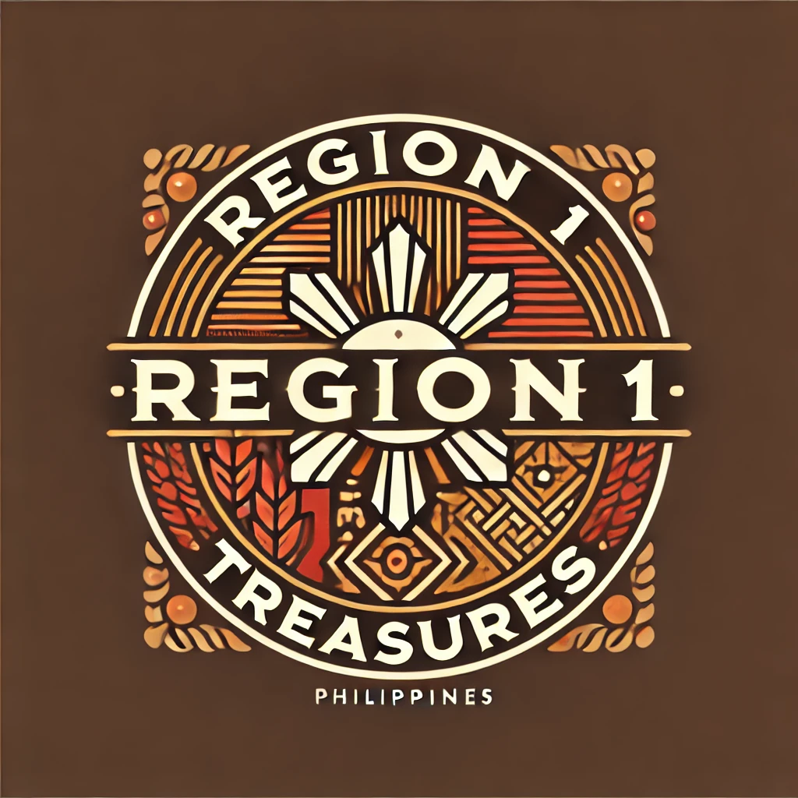

Nadur-as a Panagbiag,Ilocanos Treasure is your go-to store for the finest selection of sweets, drinks, fresh fruits and vegetables, and essential toiletries, all inspired by the rich traditions of the Ilocos region. We take pride in offering high-quality local delicacies that bring a taste of home to every bite, from delectable native sweets to refreshing regional beverages. Our fresh produce is sourced from trusted local farmers, ensuring that you get the best and healthiest options available. Beyond food, we also provide carefully selected toiletries made with natural ingredients, perfect for those who appreciate quality and tradition. Every product in our store reflects the authenticity and excellence that Ilocanos are known for.
At Ilocanos Treasure, we are committed to bringing you a shopping experience that celebrates the vibrant culture and craftsmanship of the region. Whether you’re craving traditional treats, looking for fresh and organic produce, or stocking up on daily essentials, we have something for everyone. Our goal is to promote local products while giving customers access to high-quality, homegrown goods that nourish both the body and soul. We believe in sustainability and community support, making sure that every purchase helps local farmers and artisans thrive. Visit us today and discover the true flavors and quality of Ilocos in every product we offer!
| DRINKS | SWEETS | FRUITS & VEGETABLES | TOILETRIES |
|---|